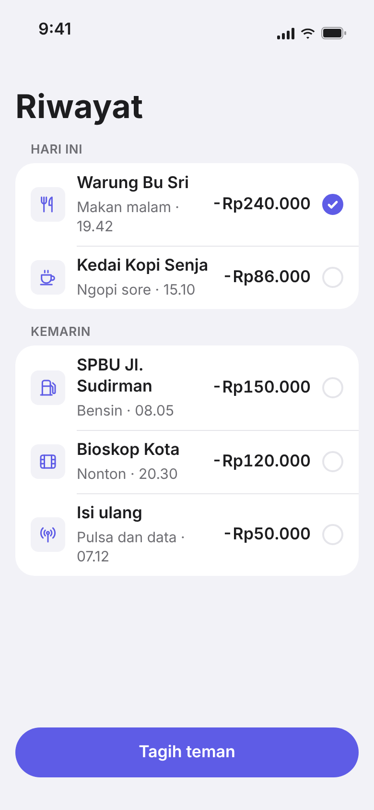
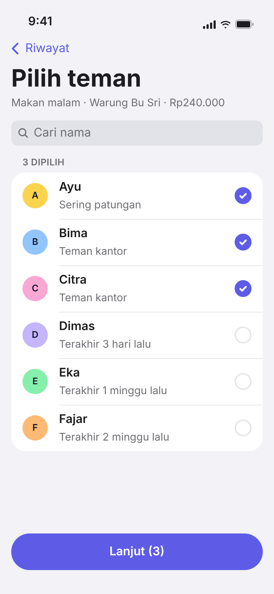
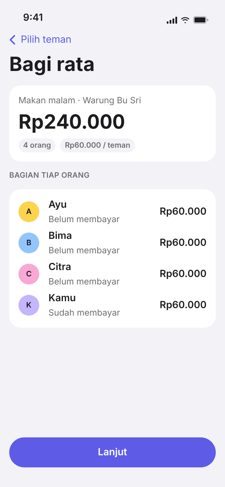
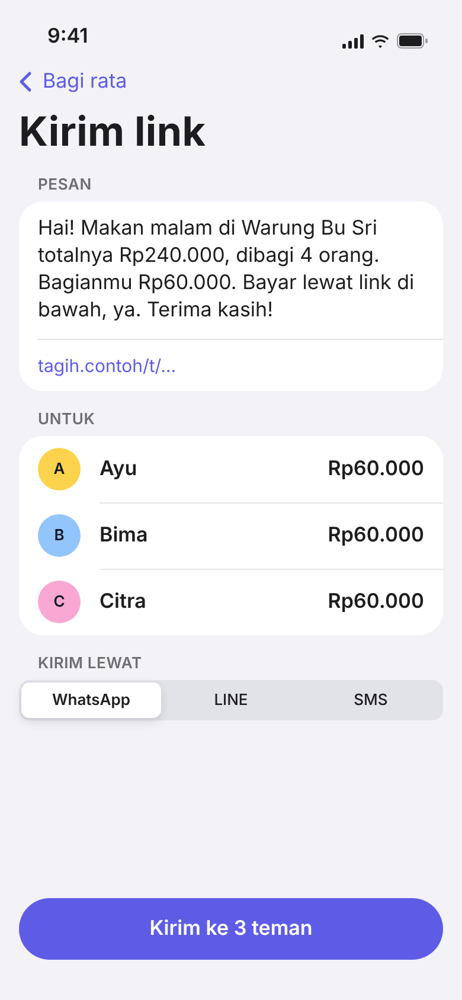
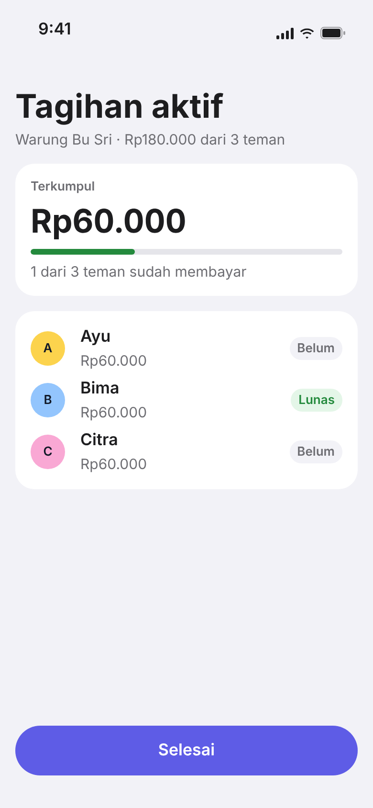

Lima layar Must dari docs/userflow.md, mobile 390 px, design system DESIGN.md (indigo, tombol kapsul). Hanya state berhasil. Data dummy, sama dengan Services/DataContoh.swift.
Contoh hasil sesi desain: prototype Tagih teman.

01 Pilih transaksi
Riwayat

02 Pilih teman
Pilih teman

03 Bagi rata
Bagi rata

04 Kirim link
Kirim link

05 Pantau status
Tagihan aktif
Token warna, jarak dan radius ada di style.css sebagai CSS variable. Screenshot 390 × 844 (2x) ada di screenshots/.